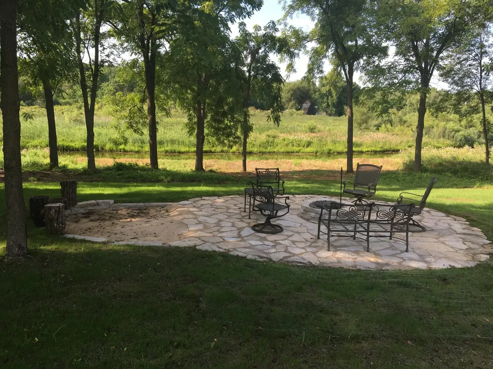
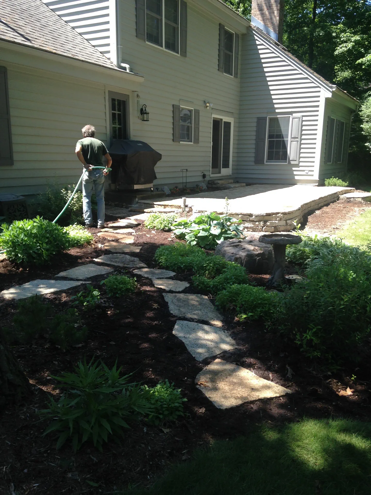
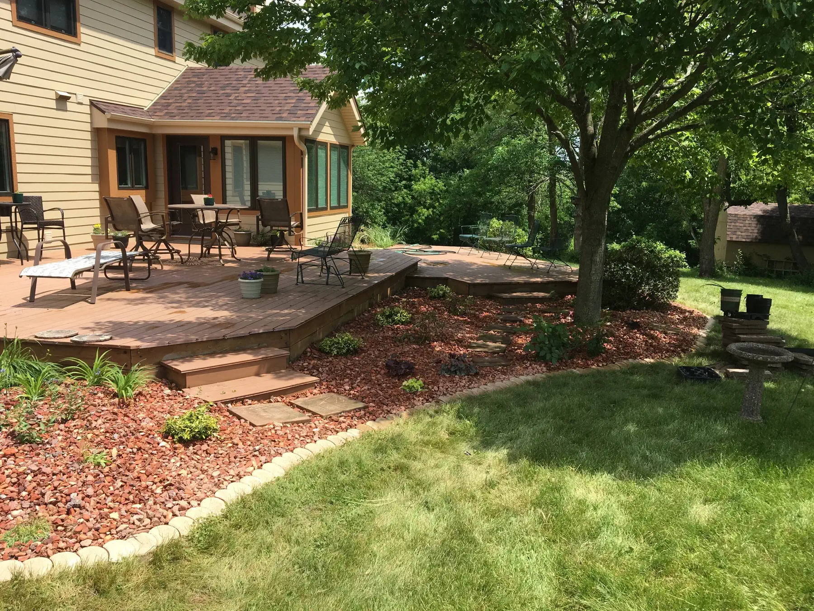
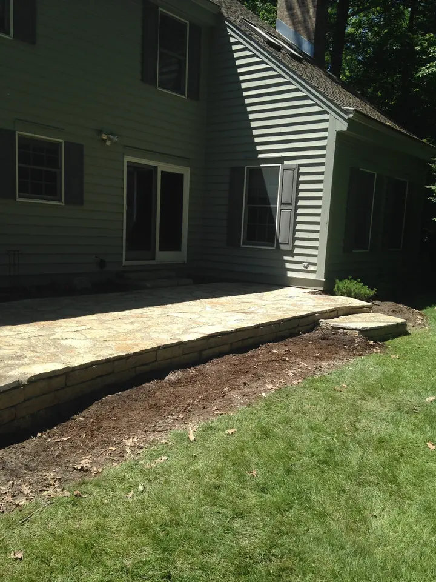
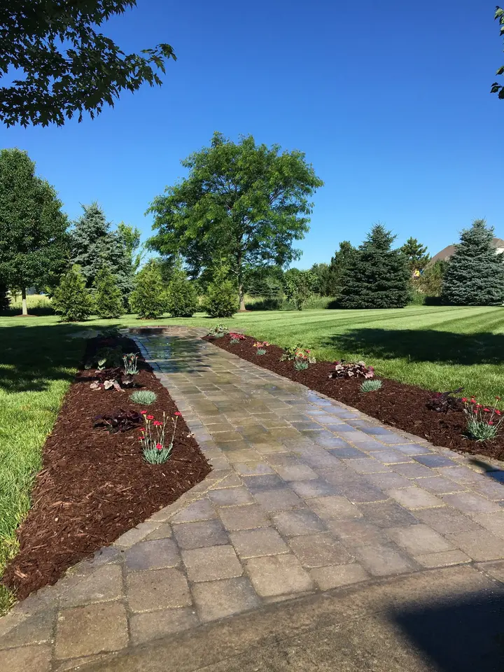
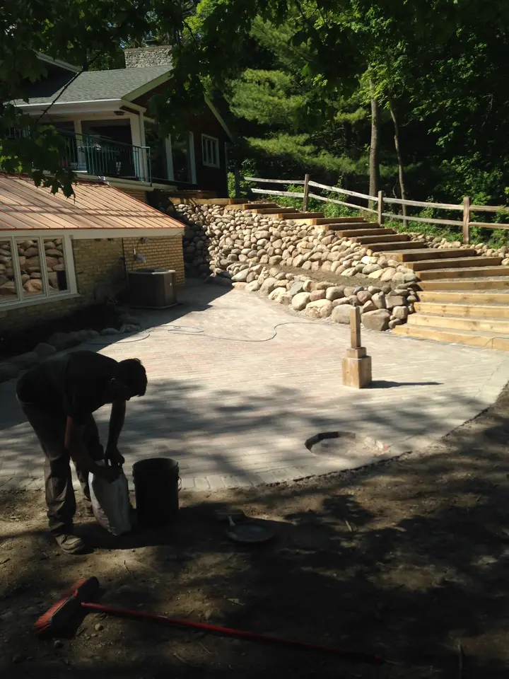
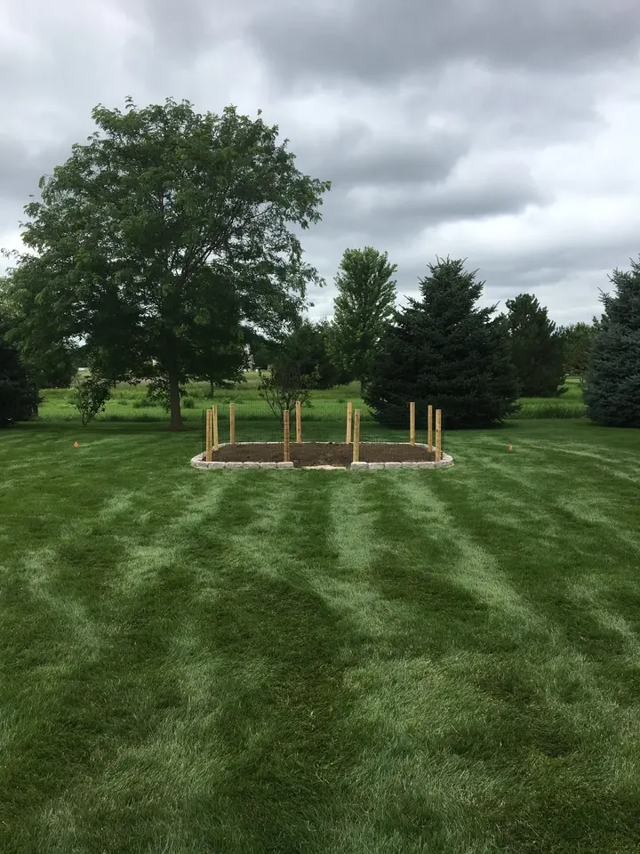

Hardscapes
Stone and paver walls, patios/walkways & ponds for functional and aesthetic purposes.
Family owned & operated · Hartland, WI
Stone and paver patios, walkways and walls, planting and design, mowing and seasonal clean-ups, with the owner & operator on the job.

No middlemen
You won't have to deal with middlemen and managers. We have a small crew which keeps costs down and brings peace of mind that the owner & operator is always on the job.
What do you need?
Pick your path to see the services that fit.

Flagstone & wallstone patio with flagstone stepping stones.
Stone and paver walls, patios/walkways & ponds for functional and aesthetic purposes.
From adjusting grade away from houses to fixing lawn area grades.
Working with you to achieve the garden/yard of your dreams, even on a tight budget.

Crescent edger lined planting beds.
Trimming and treatment services for trees, shrubs, perennials and annuals.
Scheduled mowing and repairing/reseeding of lawns.
Removal of old plant debris, mulching planting beds, leaf removal services.
"Spring has arrived (or in Wisconsin what we like to call 'Second Winter'). Now is the perfect time to get the garden beds cleared out and mulched for the earliest perennials!"Jake Tomasicyk, on the TLD blog
Our work




How it works
Family owned & operated
Tomasicyk Landscape Design is a family owned and operated business in Hartland. A small crew keeps costs down, and the owner & operator is always on the job.
Whether it's a new flagstone patio or keeping the beds clean and the lawn mowed, start with a call or an email.